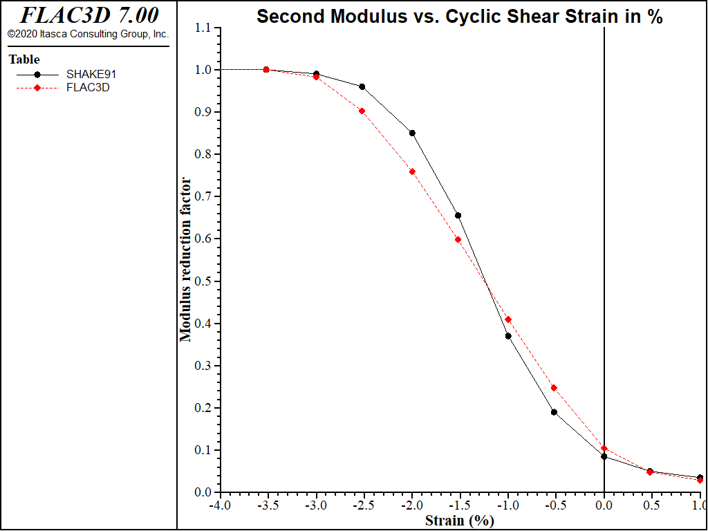
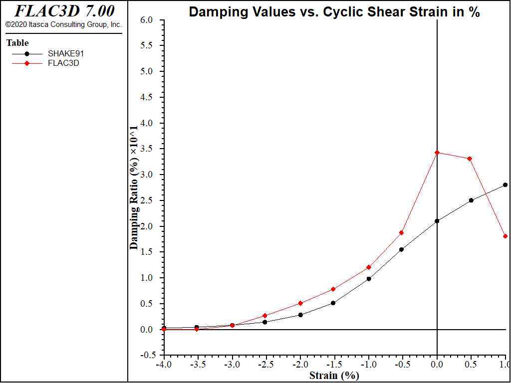
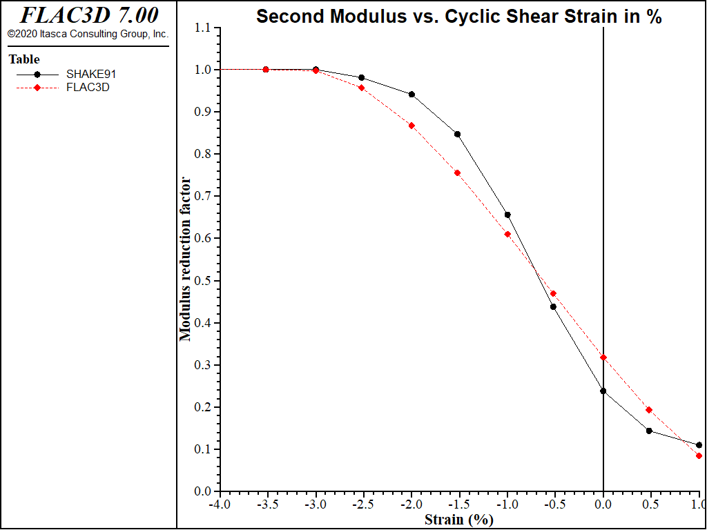
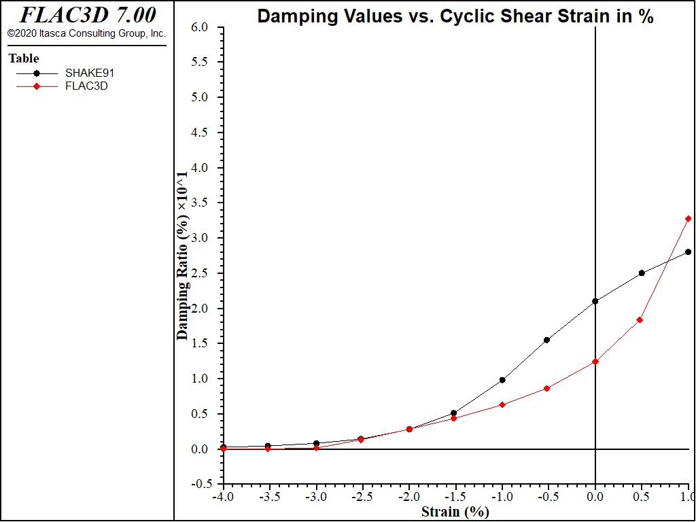
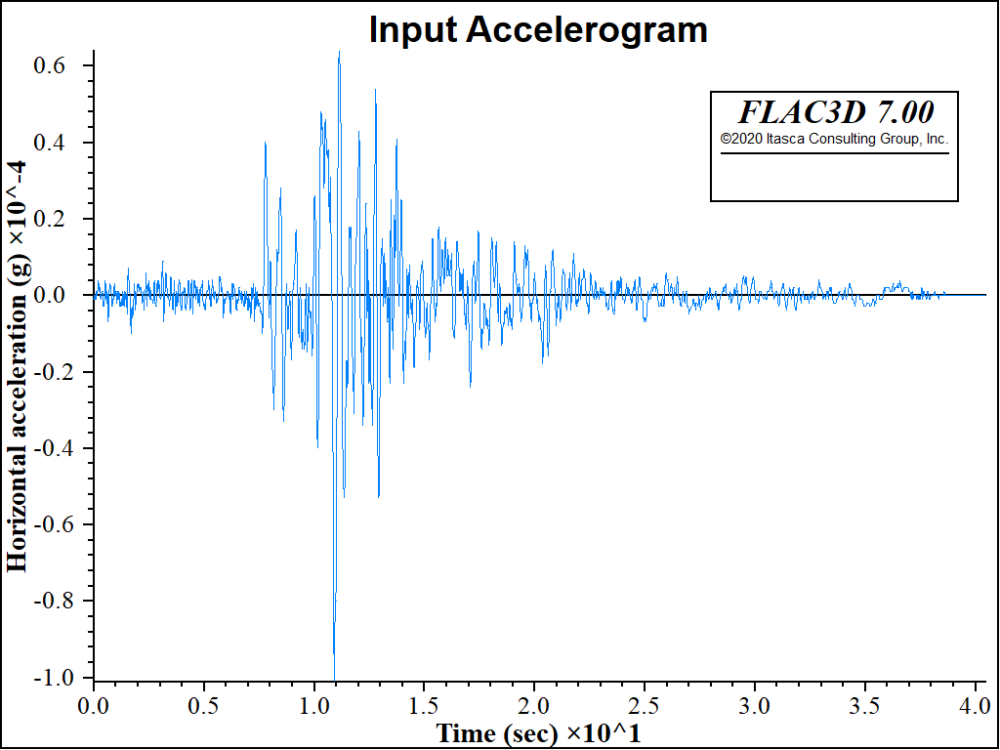
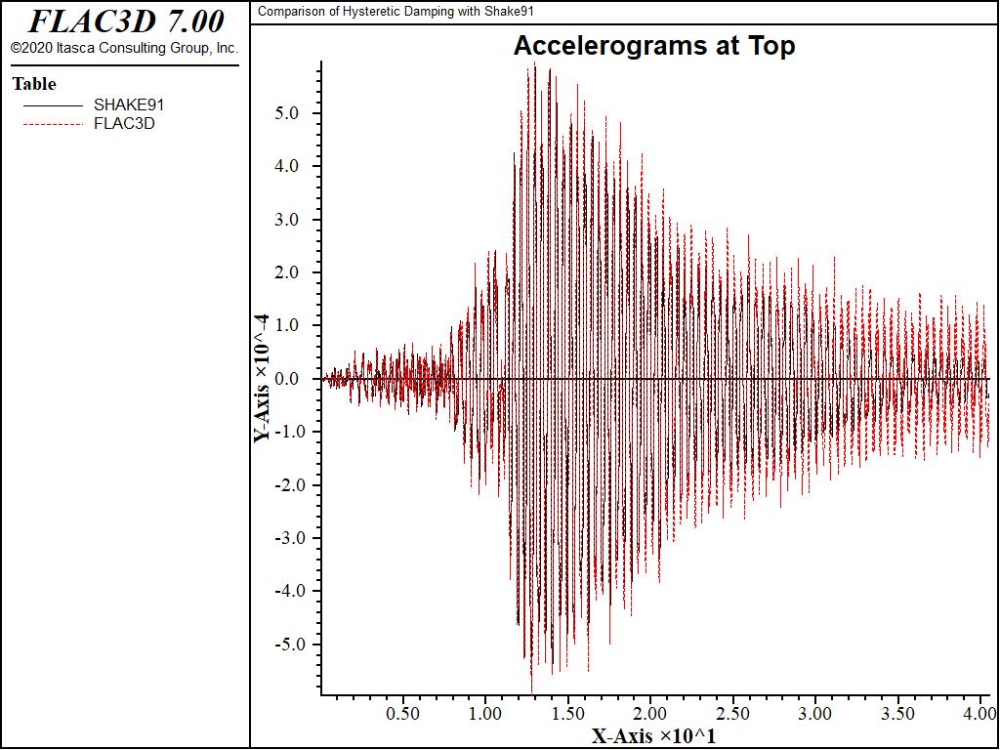
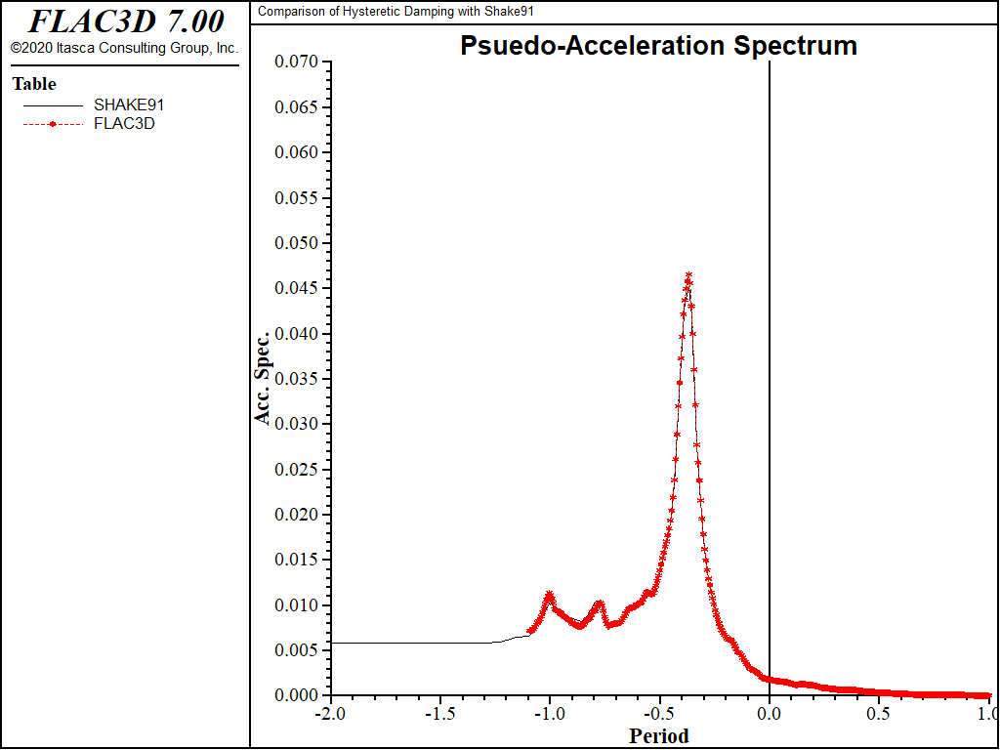
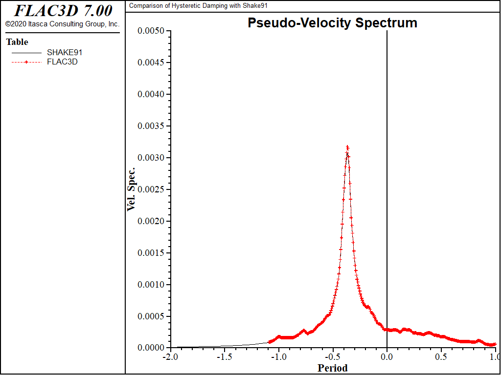
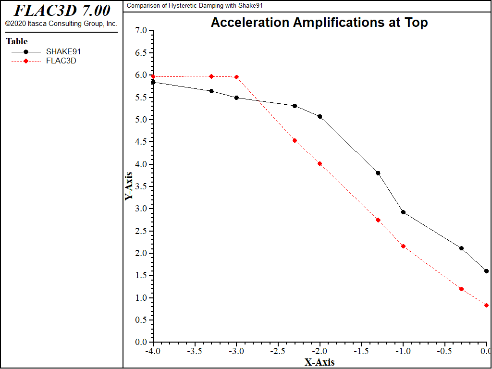

FLAC3D 与 SHAKE 对成层非线性弹性土层的比较
注意
要在 FLAC3D 中查看此项目，请使用菜单命令 。选择“Dynamic/ F3ShakeNonLinearElasticCase”并选择“F3ShakeNonLinearElasticCase.f3prj”以加载。 所用主数据文件见本示例末尾（main data files）。其余数据文件可在项目中找到。
本节中，我们将使用FLAC3D 结合 滞回阻尼（hysteretic damping）对地质剖面中波传播的模拟结果与 SHAKE-91 进行比较。 FLAC3D 和 SHAKE 模型模拟以下问题：覆盖在刚性基岩上的水平成层土 沉积层受到水平加速度基底运动的激励。 土沉积层厚 150 英尺（45.72 m），包含 10 种不同土类。假定剪切模量和阻尼 与应变相关，将土体按非线性弹性材料处理。表 1（Table 1） 汇总了沉积层中各土层的特性和 位置。这些土的动力特性 由两组模量折减系数（\(G/G_{\rm max}\)）和阻尼比 （\(\lambda\)）曲线控制：第一组（组 1）用于黏土，第二组（组 2）用于 砂。[1] 这些曲线示于 图 1（Figure 1） 至 4，图例中标记为“SHAKE91”。
| 土类 | 1 | 2 | 3 | 4 | 5 | 6 | 7 | 8 | 9 | 10 |
| 剪切模量（MPa） | 186 | 150 | 168 | 186 | 225 | 327 | 379 | 435 | 495 | 627 |
| 密度（kg/m3） | 2000 | 2000 | 2000 | 2000 | 2000 | 2082 | 2082 | 2082 | 2082 | 2082 |
| 动力特性（组） | 2 | 2 | 2 | 1 | 1 | 2 | 2 | 2 | 2 | 2 |
| 位置（英尺） | 1-5 | 5-20 | 20-30 | 30-50 | 50-70 | 70-90 | 90-110 | 110-130 | 130-140 | 140-150 |


图 1：FLAC3D default模型与动力特性组 2 的模量折减曲线比较（Seed & Idriss 数据——砂——“上限范围”）。


图 2：FLAC3D default模型与动力特性组 2 的阻尼比曲线比较（Seed & Idriss 数据——砂——“上限范围”）。


图 3：FLAC3D default模型与动力特性组 1 的模量折减曲线比较（Seed & Sun 数据——黏土——“上限范围”）。


图 4：FLAC3D default模型与动力特性组 1 的阻尼比曲线比较（Seed & Sun 数据——黏土——“上限范围”）。
本示例源自随 SHAKE-91 代码下载提供的数据文件（见 NISEE 软件页面（https://nisee.berkeley.edu/elibrary/software.html））。对 *SHAKE-91* 数据文件（*SHAKE-91* data file） 进行了修改，使最深层具有很大的波速，以对应于刚性基岩。请注意，为模拟刚性基底（rigid base），我们在 SHAKE-91 数据文件中将基岩的刚度（剪切模量）从 3.33 GPa 提高到 2080 GPa 以便比较。
基底加速度输入为 Loma Prieta 地震记录的一组地震数据，该数据也可随 SHAKE-91 代码 下载（见 SHAKE91 程序页面（https://nisee.berkeley.edu/elibrary/getpkg?id=SHAKE91））（即“DIAM.ACC”）。输入的加速度记录示于 图 5（Figure 5）。该记录的峰值加速度约为 0.11 g，持续时间 40 秒， 主频 2.47 Hz。


图 5：输入加速度记录。
SHAKE 模型 —— 使用 SHAKE-91 计算成层土沉积层对基底运动 加速度的自由场响应。进行迭代求解，直到整个土柱中的割线剪切模量和阻尼比 收敛到与 50% 最大剪应变对应值的给定容差以内。对不同的输入加速度进行计算， 并将记录缩放到最大基底加速度。[2]
FLAC3D 含滞回阻尼的模型 —— 建立一个由 30 个立方网格单元组成的 1D 土柱 FLAC3D 模型，每个网格单元 深度为 5 英尺（1.524 m），并赋予 表 1（Table 1） 中所列的土体特性。规定模型条件以模拟 具有刚性基底的成层土沉积层的自由场运动。水平加速度 记录作为输入边界条件施加在模型底部。FLAC3D 采用来自 SHAKE-91 的 缩放后基底运动。例如，请注意输入表“Diam-flac-0001.acc”按最大值 0.0001 g 缩放。模型中阻止竖向运动。
通过将切线模量函数曲线拟合到 \(G/G_{\rm max}\) 与应变的数据，为该模型加入滞回阻尼，如 图 1（Figures 1） 和 3 所示。 FLAC3D 中可使用不同的拟合函数（Different fitting functions）。本示例采用默认（双参数）函数。假设模量折减系数与剪应变遵循默认关系， 切线模量函数的参数通过对实验室模量折减曲线进行最佳拟合（例如最小二乘回归分析）来确定。 动力特性组 1——砂的最佳拟合值列于此处（here），动力特性组 2——黏土的最佳拟合值列于此处（here） CS：这样不够理想，但可以理解。前面的交叉引用需要更好的标注。 切线模量函数曲线与实验室曲线的比较示于 图 1（Figure 1） 和 3。
随后计算与切线模量函数曲线相对应的阻尼比曲线。[3] 应同时监测剪切模量折减系数（\(G/G_{\rm max}\)）与应变以及阻尼比 （\(\lambda\)）与应变的关系，并在必要时调整参数， 使两条曲线在指定应变范围内都能得到合理拟合。如 图 1（Figures 1） 至 4 所示，采用默认阻尼函数和数值拟合 Seed 与 Idriss 数据（Numerical Fits to Seed and Idris）中列出的参数， 对于砂和黏土在 0.0001% 至 0.1% 的应变范围内都获得了相当合理的模量折减 系数曲线与阻尼比曲线拟合。
由 FLAC3D 默认模型的拟合曲线 （图 1（Figures 1） 至 4）可知，对于小应变（对应于较小的 输入加速度），行为近似为线性（即 FLAC3D 和 SHAKE-91 的剪切模量和 阻尼比均为常数）。因此，在此情况下两个程序预期给出相似的结果。这里我们比较了输入加速度很低时模型顶部的加速度记录和 反应谱。 图 6（Figure 6） 显示了模型顶部（FLAC3D 中的网格点 121，SHAKE-91 中的子层 1）的水平加速度随时间的变化， 最大输入加速度幅值为 0.0001 g。两条记录非常相似；FLAC3D 与 SHAKE-91 计算的最大加速度 相差不到 0.1%。


图 6：小输入时模型顶部的加速度记录。
当最大输入加速度幅值较小（0.0001 g）时，图 7（Figures 7） 和 8 给出了在 SHAKE-91 和 FLAC3D 中标定的 伪加速度谱和伪速度谱。在 SHAKE-91 中，反应谱使用选项 9 计算。在 FLAC3D 中，反应谱使用 FISH 函数 谱（spectra） 计算，该函数在文件“spectra.dat”中实现。此处阻尼比、 最小周期和最大周期分别为 5%、0.01 和 10。从这些图中可以清楚看出，对于小幅值输入运动，FLAC3D 与 SHAKE-91 的结果相当 接近。


图 7：模型顶部的伪加速度谱。


图 8：模型顶部的伪速度谱。
为进行验证，比较了 FLAC3D 与 SHAKE-91 在模型顶部的加速度放大系数（定义为顶部最大加速度值与 基底最大输入加速度值之比）。我们测量了在“DIAM.ACC”中施加 0.0001 g、0.0005 g、0.001 g、0.005 g、0.01 g、0.05 g、0.1 g、0.5 g 和 1 g 缩放后最大输入加速度值时的比值，其中 g 为重力加速度（9.81 m/s2）。FLAC3D 直接采用来自 SHAKE-91 的缩放后基底运动。根据 图 9（Figure 9） 所示的计算结果，可以确认 FLAC3D 与 SHAKE-91 预测的加速度放大系数相似。


图 9：模型顶部的加速度放大系数比较。
参考文献
Hardin, B. O., and V. P. Drnevich. “Shear Modulus and Damping in Soils: I. Measurement and Parameter Effects, II. Design Equations and Curves,” Technical Reports UKY 27-70-CE 2 and 3, College of Engineering, University of Kentucky, Lexington, Kentucky. [These reports were later published in the Journal of Soil Mechanics and Foundation Division, ASCE, Vol. 98, No. 6, pp. 603-624 and No. 7, pp. 667-691, in June and July 1972.]
Idriss, I. M., and Joseph I. Sun. User’s Manual for SHAKE-91. University of California, Davis, Center for Geotechnical Modeling, Department of Civil & Environmental Engineering (November 1992).
Seed, H. Bolton, and I. M. Idriss. “Soil Moduli and Damping Factors for Dynamic Response Analysis,” Earthquake Engineering Research Center, University of California, Berkeley, Report No. UCB/EERC-70/10, p. 48 (December 1970).
Seed, H. Bolton, et al. “Moduli and Damping Factors for Dynamic Analyses of Cohesionless Soils,” Journal of the Geotechnical Engineering Division, ASCE, Vol. 112, No. GT11, pp. 1016-1032 (November 1986).
Sun, J. I., R. Golesorkhi and H. Bolton Seed. “Dynamic Moduli and Damping Ratios for Cohesive Soils,” Earthquake Engineering Research Center, University of California, Berkeley, Report No. UCB/EERC-88/15, p. 42 (1988).
Vucetic, M., and R. Dobry. “Effect of Soil Plasticity on Cyclic Response,” in J. Geotech. Eng. Div., ASCE, Vol. 111, No. 1, pp. 89-107 (January 1991).
数据文件
F3ShakeNonLinearElasticCase.dat
;---------------------------------------------------------------------
; 滞回阻尼与 Shake91 的比较
; 此文件使用 SHAKE91-comparison-flac3d.f3dat
; 计算第 1 层顶部的
; 加速度放大系数。它会改变
; 不同运行工况中的加速度放大倍数。
; 同时生成图表并检查错误。
;---------------------------------------------------------------------
model new
fish automatic-create off
model title 'Comparison of Hysteretic Damping with Shake91'
model configure dynamic
;----------------------------
; 加载施加的加速度
;----------------------------
table 'iacc' import 'Diam-flac-0001.acc'
; 运行 9 种不同加速度乘数的工况，
; 并存储各工况的加速度放大结果
[global all_mult = map(1,1,2,5,3,10,4,50,5,100,6,500,7,1000,8,5000,9,10000)]
; 加速度乘数工况映射表：从 1 到 10000 的 9 种工况
fish define run_all_cases
global acc_case
loop foreach acc_case map.keys(all_mult) ; 所有工况编号
global acc_mult = all_mult(acc_case) ; 加速度乘数
; 对应于该工况
command ; 通过 program call 调用执行计算的数据文件
program call 'comparison'
end_command
end_loop
end
[run_all_cases]
model save 'final'
comparison.dat
model large-strain off
;---------------------------------------------------------------------
; 滞回阻尼与 Shake91 的比较
;---------------------------------------------------------------------
; 首先，重置模型，但不清除全部内容
zone delete ; 移除所有网格单元
history delete ; 移除所有历史记录
mode dynamic time-total 0 ; 将动力时间重置为 0
;-------------------------------------
;网格生成与模型属性
;-------------------------------------
zone create brick size 1 1 30
zone cmodel assign elastic
zone property bulk 300e6 shear 186e6 density 2000 ...
range position-z 29 30
zone property bulk 200e6 shear 150e6 density 2000 ...
range position-z 26 39 ; 5–20 英尺
zone property bulk 200e6 shear 168e6 density 2000 ...
range position-z 24 26 ; 20–30 英尺
zone property bulk 270e6 shear 186e6 density 2000 ...
range position-z 20 24 ; 30–50 英尺
zone property bulk 350e6 shear 225e6 density 2000 ...
range position-z 16 20 ; 50–70 英尺
zone property bulk 480e6 shear 327e6 density 2082 ...
range position-z 12 16 ; 70–90 英尺
zone property bulk 550e6 shear 379e6 density 2082 ...
range position-z 8 12 ; 90–110 英尺
zone property bulk 600e6 shear 435e6 density 2082 ...
range position-z 4 8 ;110–130 英尺
zone property bulk 750e6 shear 495e6 density 2082 ...
range position-z 2 4 ;130–140 英尺
zone property bulk 900e6 shear 627e6 density 2082 ...
range position-z 0 2 ;140–150 英尺
;------------
; 历史
;------------
model history name 'time' dynamic time-total ; 2
zone history name 'atop' acceleration-x position (0,0,30) ;top accel 0'
;--------------------
;边界条件
;--------------------
zone gridpoint fix velocity-y
zone gridpoint fix velocity-z
zone face apply acceleration-x [acc_mult*9.81] table 'iacc' ...
time dynamic range position-z = 0
;--------------------
; 滞回阻尼
;--------------------
zone dynamic damping hysteretic default -3.325 0.823 range position-z 0 16
zone dynamic damping hysteretic default -3.156 1.904 range position-z 16 24
zone dynamic damping hysteretic default -3.325 0.823 range position-z 24 30
;----------------------------------------------
; 将尺寸放大 1.524 倍，以与 SHAKE 一致
;----------------------------------------------
zone gridpoint initialize position (1.524,1.524,1.524) multiply
;----------------------------------------------
; 求解至 40.48 秒，每 0.02 秒记录一次历史数据。
;----------------------------------------------
model dynamic timestep fix 0.0002
history interval 100
model solve time-total 40.48
;将顶部加速度时程记录存入表，以生成反应谱
history export 'atop' vs 'time' table ['tacc'+string(acc_case)]
NonlinearElasticCase-SHAKE.dat
option 1 -- dynamic soil properties -- (max is thirteen):
1
3
11 #1 modulus for clay (Seed & Sun 1989) upper range
0.0001 0.0003 0.001 0.003 0.01 0.03 0.1 0.3
1. 3. 10.
1.000 1.000 1.000 0.981 0.941 0.847 0.656 0.438
0.238 0.144 0.110
11 damping for clay (Idriss 1990) --
0.0001 0.0003 0.001 0.003 0.01 0.03 0.1 0.3
1. 3.16 10.
0.24 0.42 0.8 1.4 2.8 5.1 9.8 15.5
21. 25. 28.
11 #2 modulus for sand (Seed & Idriss 1970) -- upper range
0.0001 0.0003 0.001 0.003 0.01 0.03 0.1 0.3
1. 3. 10.
1.000 1.000 0.990 0.960 0.850 0.640 0.370 0.180
0.080 0.050 0.035
11 damping for sand (Idriss 1990) -- (about LRng from SI 1970)
0.0001 0.0003 0.001 0.003 0.01 0.03 0.1 0.3
1. 3. 10.
0.24 0.42 0.8 1.4 2.8 5.1 9.8 15.5
21. 25. 28.
8 #3 ATTENUATION OF ROCK AVERAGE
.0001 0.0003 0.001 0.003 0.01 0.03 0.1 1.0
1.000 1.000 0.9875 0.9525 0.900 0.810 0.725 0.550
5 DAMPING IN ROCK
.0001 0.001 0.01 0.1 1.
0.4 0.8 1.5 3.0 4.6
3 1 2 3
Option 2 -- Soil Profile
2
1 17 Example -- 150-ft layer; input:Diam [] .1g
1 2 5.00 .050 .125 1000.
2 2 5.00 .050 .125 900.
3 2 10.00 .050 .125 900.
4 2 10.00 .050 .125 950.
5 1 10.00 .050 .125 1000.
6 1 10.00 .050 .125 1000.
7 1 10.00 .050 .125 1100.
8 1 10.00 .050 .125 1100.
9 2 10.00 .050 .130 1300.
10 2 10.00 .050 .130 1300.
11 2 10.00 .050 .130 1400.
12 2 10.00 .050 .130 1400.
13 2 10.00 .050 .130 1500.
14 2 10.00 .050 .130 1500.
15 2 10.00 .050 .130 1600.
16 2 10.00 .050 .130 1800.
17 3 .010 .140 100000.
Option 3 -- input motion:
3
1900 4096 .02 diam.acc (8f10.6)
.0001 25. 3 8
Option 4 -- sublayer for input motion within (1) or outcropping (0):
4
17 0
Option 5 -- number of iterations & ratio of avg strain to max strain
5
0 8 0.50
Option 6 -- sublayers for which accn time histories are computed & saved:
6
1 2 3 4 5 6 7 8 9 10 11 12 13 14 15
0 1 1 1 1 1 1 1 1 1 1 1 1 1 1
1 0 0 0 0 1 0 0 0 1 0 0 0 1 0
Option 6 -- sublayers for which accn time histories are computed & saved:
6
16 17 17
1 1 0
0 1 0
option 7 -- sublayer for which shear stress or strain are computed & saved:
7
4 1 1 0 1800 -- stress in level 4
4 0 1 0 1800 -- strain in level 4
option 7 -- sublayer for which shear stress or strain are computed & saved:
7
8 1 1 0 1800 -- stress in level 8
8 0 1 0 1800 -- strain in level 8
option 9 -- compute & save response spectrum:
9
1 0
1 0 981.0
0.05
option 10 -- compute & save amplification spectrum:
10
17 0 1 0 0.125 -- surface/rock outcrop
execution will stop when program encounters 0
0
尾注
| [1] | 有关土体 \(G/G_{\rm max}\) 和 \(\lambda\) 的更多变化形式可在 SHAKE-91 手册（Idriss 和 Sun 1992）所引文献中找到，为便于参考此处再次列出（例如 Hardin 和 Drnevich 1972、Seed 和 Idriss 1970、Seed 等 1986、Sun 等 1988、Vucetic 和 Dobry 1991）。 |
| [2] | 缩放通过 SHAKE-91 的内置功能实现，使用 OPTION 3 中的两个缩放参数之一。 |
| [3] | 项目 若干循环应变水平（Several Cyclic Strain Levels） 中的数据文件可用于对单网格单元 FLAC3D 模型进行一系列简单剪切试验，以得到与切线模量函数相对应的阻尼比曲线。 |
⇐ Comparison of FLAC3D to SHAKE for a Layered, Linear-Elastic Soil Deposit | Slip Induced by Harmonic Shear Wave ⇒
| 这些内容对您有帮助吗？… 版权与免责声明 | FLAC3D © 2019, Itasca | 原文更新于 2020 年 10 月 8 日 |